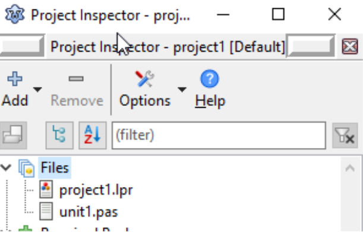
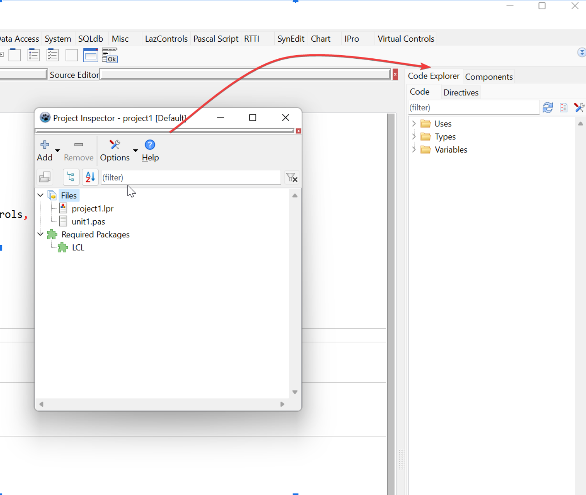
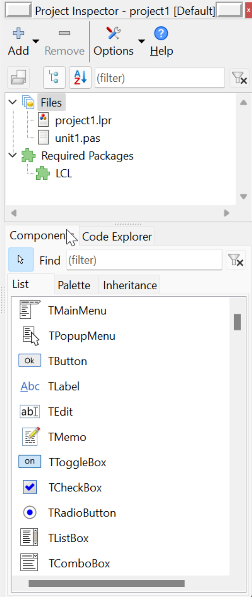
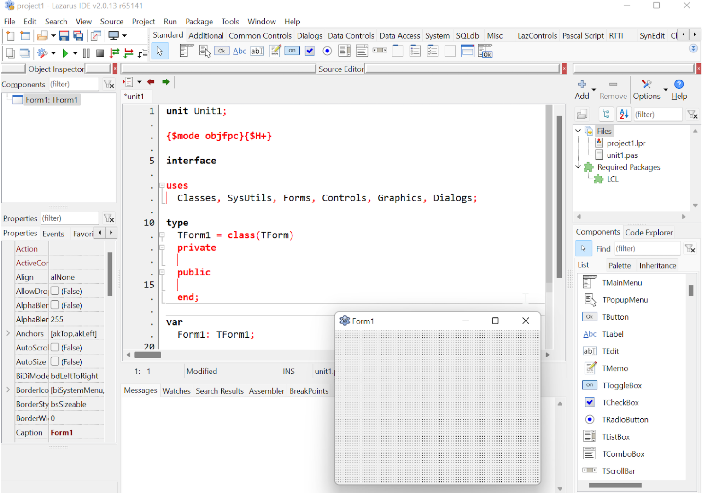

Vá em Project->Project Inspector (Projeto->Inspetor de Projetos) e aparecerá essa janela solta das demais:

Então faça a sua docagem na parte superior onde se encontra também a paleta de componentes do lado direito:

Essa docagem nem sempre é fácil, minha recomendação é que faça a des-docagem. Deixando todas as janelas flutuantes e daí então faça a docagem uma de cada vez até ficar assim:

O inspetor de projetos fica em cima e o painel “Code explorer” e “Componentes” compartilham lado-a-lado o mesmo espaço embaixo.
Mais tarde e com mais experiência poderá encontrar posições melhores. As posições indicadas foram minhas percepções de como ficou melhor usá-las.
No final, ficará assim:

Estamos chegando ao clímax, falta pouco e ainda dá para melhorar.